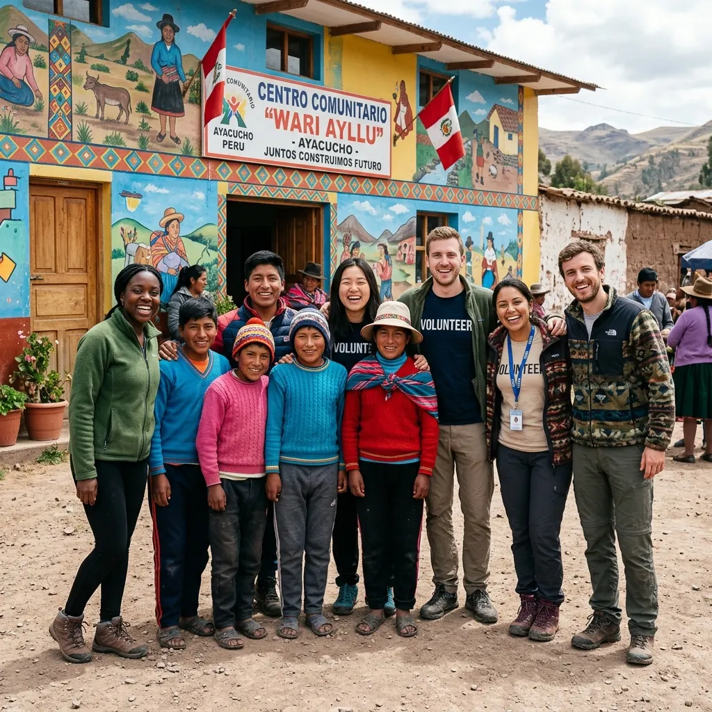

Sembrando el
futuro hoy
243 estudiantes regulares en Yanama. 83% de éxito escolar superando la meta. 18 graduados de GastronomÃa con 576 horas prácticas y empleo directo. Datos 100% verificados del informe anual.
Impacto 2025 en cifras exactas
Datos extraÃdos directamente del informe anual institucional 2025.
Educación Integral en Yanama
Resultados pedagógicos auditados: superamos la meta anual con un 83% de promoción académica.
 Educación 2025
Educación 2025202 Alumnos Promovidos Directamente
Con 341 matriculados y 243 alumnos de asistencia regular, 202 niños (83%) aprobaron su año escolar sin requerir recuperación. 41 alumnos ingresaron al programa de nivelación y cero niños reprobaron al cierre del año.
Los estudiantes en nivel "Logrado" aumentaron de 62 a 164 entre la prueba diagnóstica y la evaluación final de noviembre.
sin fallar
al cierre
leer y escribir"
 Innovación
InnovaciónFestivales de Aprendizaje y Aulas Digitales
Implementamos el proyecto de lectoescritura de 4 meses "Yo puedo leer y escribir" con 210 estudiantes, el Festival de Atención y Concentración con 190 niños, y el Festival de Cometas con 198 niños y sus familias volando cometas juntos.
Además, 55 alumnos participaron en sesiones semanales con pizarras digitales interactivas, y 20 niños recibieron refuerzo en educación individualizada (18 con mejoras sobresalientes).
Festival Cometas
Concentración
Aulas Digitales
Salud, PsicologÃa y Bienestar Familiar
Atención bio-psico-social integral para proteger a los niños y fortalecer sus hogares.

Salud Integral75 Emergencias y 6 Casos Médicos Urgentes
Se resolvieron 6 casos médicos especiales de alta complejidad al 100% de efectividad (fracturas, neurologÃa, dermatologÃa, sospechas de ITS). En salud bucal, 107 niños participaron activamente con la ClÃnica Dental KARIDENT, tratando a 10 con caries avanzadas.
Educación sexual integral: 28 alumnos de 6to grado y talleres para jóvenes de 17-23 años en el HTC sobre salud reproductiva y prevención.
primeros auxilios
bucal Karident
resueltos
 PsicologÃa
PsicologÃa20 Casos Sociales y Programa Rock & Water
Atendimos 20 casos sociales (17 familiares y 3 individuales; 12 resueltos con éxito). En psicologÃa, 14 personas recibieron psicoterapia individual (11 completaron el proceso). Más de 100 niños asistieron a actividades semanales de autorregulación emocional.
El programa Rock and Water capacitó a 174 estudiantes de dos colegios aliados en autocontrol, manejo de presión social y prevención del acoso escolar.
Rock & Water
gestionados
completadas
Hospitality Training Center — GastronomÃa 2025
Formación culinaria de élite en régimen de internado con inserción laboral real.
 HTC 2025
HTC 202518 Graduados · 12 Empleados Inmediatos
31 jóvenes iniciaron y 18 (13 varones, 5 mujeres) completaron 8 meses de internado viviendo en dormitorios con más de 50 horas semanales de formación práctica intensiva. El 100% realizó pasantÃas profesionales acumulando 576 horas en el Restaurante QuinuaQ.
12 graduados ya trabajan en cocinas profesionales de Ayacucho, Huamanga y Lima; otros financian sus estudios superiores con sus ingresos como cocineros.
profesionales
inmediato
en QuinuaQ
Resultados Académicos Auditados
Comparativa del rendimiento escolar de los 243 alumnos regulares en Yanama.
- Promovidos sin problemas (202 niños)83%
- Programa de recuperación (41 niños)17%
- Reprobados tras recuperación0%
| Nivel de Logro | Inicio | Final | Progreso |
|---|---|---|---|
| Logrado (Achieved) | 62 niños | 164 niños | +164% |
| En Proceso | 118 niños | 61 niños | Consolidado |
| Nivel Inicial / Dificultad | 63 niños | 18 niños | -71% |
Red de Aliados Institucionales
Restaurantes, centros de salud y entidades que recibieron a nuestros estudiantes y familias en 2025.
"Llegué con dificultades para hablar y mucha inseguridad. En Mama Alice y QuinuaQ descubrà mi pasión. Con trabajo duro me convertà en uno de los mejores del grupo. Hoy trabajo en Alfredo Fusión y mi sueño es llegar a ser jefe de cocina."

Descarga la Memoria Anual 2025
Accede al documento institucional de 40 páginas con el detalle pormenorizado de cada área.